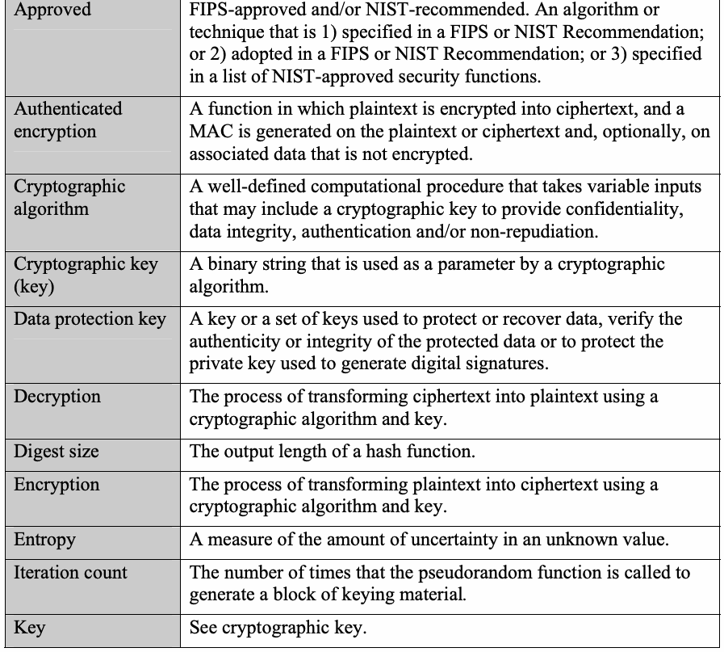
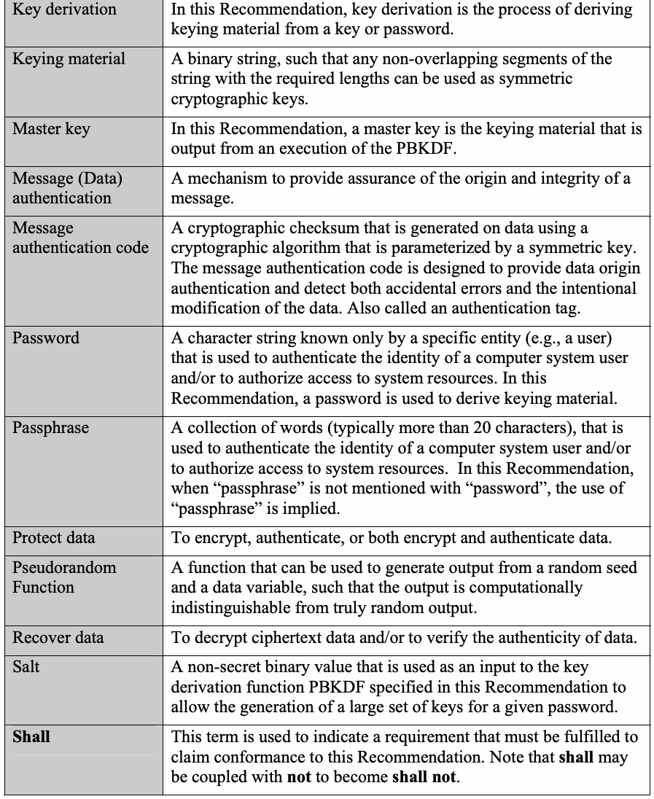
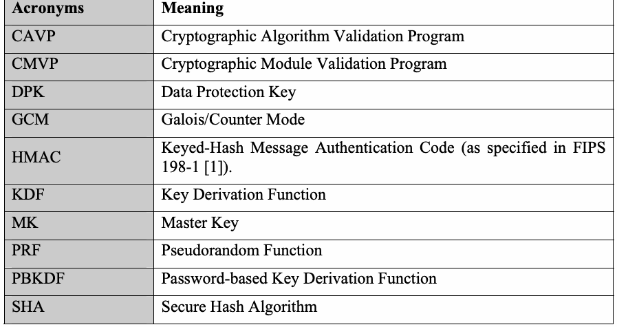
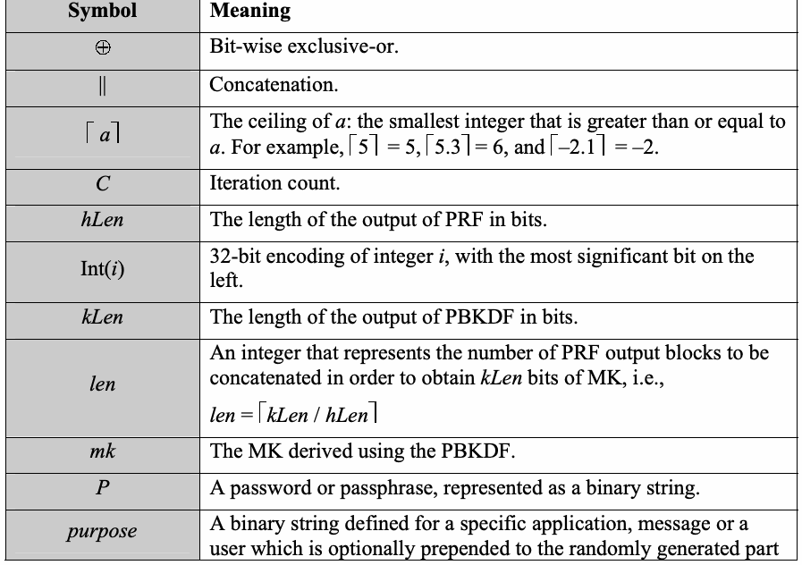
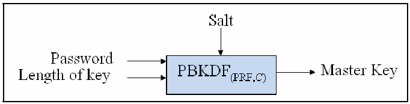
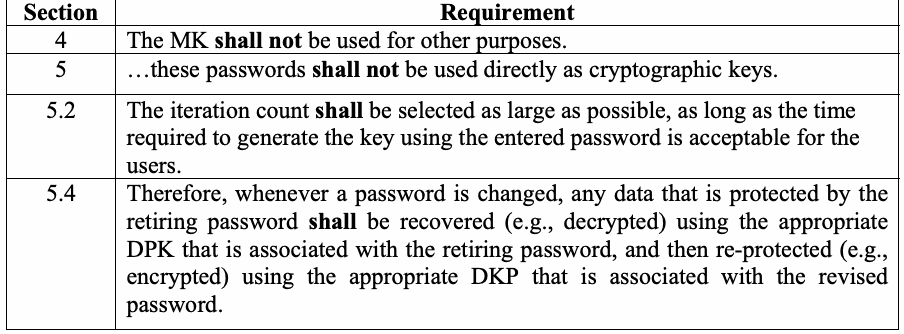

NIST SP 800-132 日本語訳
英語タイトル : Recommendation for Password-Based Key Derivation: Part 1: Storage Applications日本語タイトル : パスワードベース鍵導出に関する推奨事項：第1部：ストレージアプリケーション
公開日 : 2010-12-22
原文URL : https://csrc.nist.gov/pubs/sp/800/132/final
翻訳編集 : 自動生成（有志による非公式の日本語訳）, 原文取得日 : 2026-09-27, 訳文 : 119 / 121 ブロック
[要約] SP 800-132 は、保存された電子データまたはデータ保護鍵を保護するために、パスワードやパスフレーズからマスター鍵を導出する手法を規定する推奨事項です。パスワードベース鍵導出関数（PBKDF）の仕様を中心に、ソルトと反復回数の扱い、導出したマスター鍵を用いたデータ保護、セキュリティ上の考慮事項を扱います。本書は、ストレージアプリケーションを対象とする第1部です。
NIST Special Publication 800-132
NIST特別刊行物800-132
Recommendation for Password-Based Key Derivation
パスワードベース鍵導出に関する勧告
Part 1: Storage Applications
第1部：ストレージアプリケーション
Meltem Sönmez Turan, Elaine Barker, William Burr, and Lily Chen
Meltem Sönmez Turan、Elaine Barker、William Burr、Lily Chen
Computer Security Division Information Technology Laboratory
コンピュータセキュリティ部門、情報技術研究所
C O M P U T E R S E C U R I T Y
コンピュータセキュリティ
December 2010
2010年12月
［米国商務省の紋章。公的な標章のため、この非公式サイトには掲載していない。原本 PDF を参照。］
U.S. Department of Commerce
米国商務省
Gary Locke, Secretary
長官 Gary Locke
National Institute of Standards and Technology
米国国立標準技術研究所
Patrick D. Gallagher, Director
所長 Patrick D. Gallagher
Abstract
概要
This Recommendation specifies techniques for the derivation of master keys from passwords or passphrases to protect stored electronic data or data protection keys.
本勧告は、保存された電子データまたはデータ保護鍵を保護するために、パスワードまたはパスフレーズからマスター鍵を導出する手法を規定する。
KEY WORDS: Password-Based Key Derivation Functions, Salt, Iteration Count, Protection of data in storage
キーワード：パスワードベース鍵導出関数、ソルト、反復回数、保存データの保護
Acknowledgements
謝辞
The authors, Meltem Sönmez Turan, Elaine Barker, William Burr, and Lily Chen of the National Institute of Standards and Technology (NIST), would like to thank their colleagues at NIST, Shu-jen H. Chang, Morris Dworkin, Allen Roginsky, and John Kelsey, and also Morgan Stern, Matt Yurkewych, Kevin Igoe, Rich Davis and Chris Bean of the National Security Agency, for helpful discussions and valuable comments.
本書の著者である米国国立標準技術研究所（NIST）のMeltem Sönmez Turan、Elaine Barker、William Burr、Lily Chenは、有益な議論と貴重なコメントを寄せてくれたNISTの同僚であるShu-jen H. Chang、Morris Dworkin、Allen Roginsky、John Kelsey、ならびに米国国家安全保障局のMorgan Stern、Matt Yurkewych、Kevin Igoe、Rich Davis、Chris Beanに感謝する。
Table of Contents
目次
1 Introduction — 1
1 はじめに — 1
2 Authority — 1
2 権限 — 1
3 Definitions, Acronyms and Symbols — 2
3 定義、略語および記号 — 2
3.1 Definitions — 2
3.1 定義 — 2
3.2 Acronyms — 4
3.2 略語 — 4
3.3 Symbols — 4
3.3 記号 — 4
4 General Discussion — 5
4 総論 — 5
5 Password-Based Key Derivation Functions — 5
5 パスワードベース鍵導出関数 — 5
5.1 The Salt (S) — 6
5.1 ソルト（S） — 6
5.2 The Iteration Count (C) — 6
5.2 反復回数（C） — 6
5.3 PBKDF Specification — 7
5.3 PBKDFの仕様 — 7
5.4 Using the Derived Master Key to Protect Data — 8
5.4 導出したマスター鍵を用いたデータ保護 — 8
6 References — 10
6 参考文献 — 10
Appendix A Security Considerations — 11
付録A セキュリティ上の考慮事項 — 11
A.1 User-Selected Passwords — 11
A.1 利用者が選択するパスワード — 11
A.2 PBKDF — 12
A.2 PBKDF — 12
A.2.1 Length of the Salt — 12
A.2.1 ソルトの長さ — 12
A.2.2 Iteration Count — 12
A.2.2 反復回数 — 12
A.3 Protection of DPK — 14
A.3 DPKの保護 — 14
Appendix B Conformance to “Non-testable” Requirements — 14
付録B「テスト不可能な」要件への適合 — 14
Recommendation for Password-Based Key Derivation
パスワードベース鍵導出に関する勧告
1 Introduction
1 はじめに
The randomness of cryptographic keys is essential for the security of cryptographic applications. In some applications, such as the protection of electronically stored data, passwords may be the only input required from the users who are eligible to access the data. Due to the low entropy and possibly poor randomness of those passwords, they are not suitable to be used directly as cryptographic keys.
暗号鍵のランダム性は、暗号アプリケーションのセキュリティに不可欠である。電子保存データを保護する場合など、一部のアプリケーションでは、データへのアクセス資格を持つ利用者に求める入力がパスワードだけのことがある。これらのパスワードはエントロピーが低く、ランダム性も十分でない可能性があるため、暗号鍵として直接使用するのに適していない。
This Recommendation specifies a family of password-based key derivation functions (PBKDFs) for deriving cryptographic keys from passwords or passphrases for the protection of electronically-stored data or for the protection of data protection keys.
本勧告は、電子保存データの保護またはデータ保護鍵の保護のために、パスワードまたはパスフレーズから暗号鍵を導出するパスワードベース鍵導出関数（PBKDF）群を規定する。
2 Authority
2 権限
This publication has been developed by the National Institute of Standards and Technology (NIST) in furtherance of its statutory responsibilities under the Federal Information Security Management Act (FISMA) of 2002, Public Law 107-347. NIST is responsible for developing standards and guidelines, including minimum requirements for federal information systems, but such standards and guidelines shall not apply to national security systems.
本刊行物は、2002年連邦情報セキュリティ管理法（FISMA、Public Law 107-347）に基づく法定責務を遂行するため、米国国立標準技術研究所（NIST）が作成した。NISTは、連邦情報システムの最低要件を含む基準および指針を策定する責務を負うが、これらの基準および指針は国家安全保障システムには適用されない。
This Recommendation has been prepared for use by Federal agencies. It may be used by non-governmental organizations on a voluntary basis and is not subject to copyright. (Attribution would be appreciated by NIST.)
本勧告は連邦機関が使用するために作成された。非政府組織も任意で使用でき、著作権の対象ではない。（出典を明示していただければ、NISTとしては幸いである。）
Nothing in this document should be taken to contradict the standards and guidelines made mandatory and binding on federal agencies by the Secretary of Commerce under statutory authority. Nor should these guidelines be interpreted as altering or superseding the existing authorities of the Secretary of Commerce, Director of the OMB, or any other federal official.
本書のいかなる内容も、法的権限に基づき商務長官が連邦機関に対して義務的かつ拘束力のあるものとした基準および指針に矛盾するものと解釈すべきではない。また、本指針は、商務長官、行政管理予算局（OMB）長官、その他の連邦当局者の既存の権限を変更し、またはそれに取って代わるものと解釈すべきではない。
Conformance testing for implementations of this Recommendation will be conducted within the framework of the Cryptographic Module Validation Program (CMVP) and the Cryptographic Algorithm Validation Program (CAVP). The requirements of this Recommendation are indicated by the word “shall”. Some of these requirements may be out-of-scope for CMVP or CAVP validation testing, and thus are the responsibility of entities using, implementing, installing or configuring applications that incorporate this Recommendation.
本勧告の実装に対する適合性試験は、暗号モジュール検証プログラム（CMVP）および暗号アルゴリズム検証プログラム（CAVP）の枠組みの中で実施される。本勧告の要件は「shall」という語で示される。これらの要件の一部はCMVPまたはCAVPの検証試験の対象外となる場合があり、したがって、本勧告を組み込むアプリケーションを使用、実装、導入、または構成する主体の責任となる。
3 Definitions, Acronyms and Symbols
3 定義、略語および記号
3.1 Definitions
3.1 定義
| Approved | FIPS-approved and/or NIST-recommended. An algorithm or technique that is 1) specified in a FIPS or NIST Recommendation; or 2) adopted in a FIPS or NIST Recommendation; or 3) specified in a list of NIST-approved security functions. |
| Authenticated encryption | A function in which plaintext is encrypted into ciphertext, and a MAC is generated on the plaintext or ciphertext and, optionally, on associated data that is not encrypted. |
| Cryptographic algorithm | A well-defined computational procedure that takes variable inputs that may include a cryptographic key to provide confidentiality, data integrity, authentication and/or non-repudiation. |
| Cryptographic key (key) | A binary string that is used as a parameter by a cryptographic algorithm. |
| Data protection key | A key or a set of keys used to protect or recover data, verify the authenticity or integrity of the protected data or to protect the private key used to generate digital signatures. |
| Decryption | The process of transforming ciphertext into plaintext using a cryptographic algorithm and key. |
| Digest size | The output length of a hash function. |
| Encryption | The process of transforming plaintext into ciphertext using a cryptographic algorithm and key. |
| Entropy | A measure of the amount of uncertainty in an unknown value. |
| Iteration count | The number of times that the pseudorandom function is called to generate a block of keying material. |
| Key | See cryptographic key. |
原本PDFの抜粋画像

| 承認済み | FIPS承認済みおよび／またはNIST推奨。アルゴリズムまたは技法で、(1) FIPSまたはNIST勧告に規定される、(2) FIPSまたはNIST勧告に採用される、あるいは(3) NIST承認済みセキュリティ機能の一覧に指定されるもの。 |
| 認証付き暗号 | 平文を暗号化して暗号文とし、平文または暗号文に対して、および任意で暗号化されない関連データに対してMACを生成する機能。 |
| 暗号アルゴリズム | 暗号鍵を含むことがある可変の入力を受け取り、機密性、データ完全性、認証、および／または否認防止を提供する、明確に定義された計算手順。 |
| 暗号鍵（鍵） | 暗号アルゴリズムのパラメータとして使われるバイナリ文字列。 |
| データ保護鍵 | データの保護もしくは復元、保護対象データの真正性もしくは完全性の検証、またはデジタル署名の生成に用いる秘密鍵の保護に用いる鍵または鍵の集合。 |
| 復号 | 暗号アルゴリズムと鍵を用いて暗号文を平文に変換する処理。 |
| ダイジェスト長 | ハッシュ関数の出力長。 |
| 暗号化 | 暗号アルゴリズムと鍵を用いて平文を暗号文に変換する処理。 |
| エントロピー | 未知の値に含まれる不確実性の量の尺度。 |
| 反復回数 | 鍵素材の1ブロックを生成するために疑似ランダム関数を呼び出す回数。 |
| 鍵 | 暗号鍵を参照。 |
| Key derivation | In this Recommendation, key derivation is the process of deriving keying material from a key or password. |
| Keying material | A binary string, such that any non-overlapping segments of the string with the required lengths can be used as symmetric cryptographic keys. |
| Master key | In this Recommendation, a master key is the keying material that is output from an execution of the PBKDF. |
| Message (Data) authentication | A mechanism to provide assurance of the origin and integrity of a message. |
| Message authentication code | A cryptographic checksum that is generated on data using a cryptographic algorithm that is parameterized by a symmetric key. The message authentication code is designed to provide data origin authentication and detect both accidental errors and the intentional modification of the data. Also called an authentication tag. |
| Password | A character string known only by a specific entity (e.g., a user) that is used to authenticate the identity of a computer system user and/or to authorize access to system resources. In this Recommendation, a password is used to derive keying material. |
| Passphrase | A collection of words (typically more than 20 characters), that is used to authenticate the identity of a computer system user and/or to authorize access to system resources. In this Recommendation, when “passphrase” is not mentioned with “password”, the use of “passphrase” is implied. |
| Protect data | To encrypt, authenticate, or both encrypt and authenticate data. |
| Pseudorandom Function | A function that can be used to generate output from a random seed and a data variable, such that the output is computationally indistinguishable from truly random output. |
| Recover data | To decrypt ciphertext data and/or to verify the authenticity of data. |
| Salt | A non-secret binary value that is used as an input to the key derivation function PBKDF specified in this Recommendation to allow the generation of a large set of keys for a given password. |
| Shall | This term is used to indicate a requirement that must be fulfilled to claim conformance to this Recommendation. Note that shall may be coupled with not to become shall not. |
原本PDFの抜粋画像

| 鍵導出 | 本勧告では、鍵導出とは、鍵またはパスワードから鍵素材を導出する処理である。 |
| 鍵素材 | バイナリ文字列であって、その文字列の、必要な長さを持つ重複しない任意の部分列を共通鍵暗号鍵として使用できるもの。 |
| マスター鍵 | 本勧告では、マスター鍵とは、PBKDFの実行により出力される鍵素材である。 |
| メッセージ（データ）認証 | メッセージの出所および完全性を保証する仕組み。 |
| メッセージ認証コード | 共通鍵をパラメータとする暗号アルゴリズムを用いて、データに対して生成される暗号学的チェックサム。メッセージ認証コードは、データの出所の認証を提供し、偶発的な誤りとデータの意図的な改変の両方を検出するよう設計されている。認証タグとも呼ばれる。 |
| パスワード | 特定の主体（例：利用者）のみが知る文字列であり、コンピュータシステム利用者の本人性の認証、および／またはシステム資源へのアクセスの認可に使われる。本勧告では、パスワードは鍵素材の導出に用いる。 |
| パスフレーズ | 単語の集まり（通常は20文字を超える）であり、コンピュータシステム利用者の本人性の認証、および／またはシステム資源へのアクセスの認可に使われる。本勧告では、「パスワード」とともに「パスフレーズ」が記されていない場合でも、「パスフレーズ」の使用が含意される。 |
| データを保護する | データを暗号化する、認証する、または暗号化と認証の両方を行うこと。 |
| 疑似ランダム関数 | ランダムなシードとデータ変数から出力を生成するために使用でき、その出力が真にランダムな出力と計算量的に区別できない関数。 |
| データを復元する | 暗号文データを復号すること、および／またはデータの真正性を検証すること。 |
| ソルト | 所与のパスワードに対して大きな鍵の集合を生成できるようにするため、本勧告で規定する鍵導出関数PBKDFへの入力として使う、秘密ではないバイナリ値。 |
| Shall | この用語は、本勧告への適合を主張するために満たさなければならない要件を示すために使われる。shallはnotと組み合わされてshall notとなる場合があることに留意。 |
3.2 Acronyms
3.2 略語
| Acronyms | Meaning |
| CAVP | Cryptographic Algorithm Validation Program |
| CMVP | Cryptographic Module Validation Program |
| DPK | Data Protection Key |
| GCM | Galois/Counter Mode |
| HMAC | Keyed-Hash Message Authentication Code (as specified in FIPS 198-1 [1]). |
| KDF | Key Derivation Function |
| MK | Master Key |
| PRF | Pseudorandom Function |
| PBKDF | Password-based Key Derivation Function |
| SHA | Secure Hash Algorithm |
原本PDFの抜粋画像

| 略語 | 意味 |
| CAVP | 暗号アルゴリズム検証プログラム |
| CMVP | 暗号モジュール検証プログラム |
| DPK | データ保護鍵 |
| GCM | ガロア／カウンターモード |
| HMAC | 鍵付きハッシュメッセージ認証コード（FIPS 198-1 [1]で規定） |
| KDF | 鍵導出関数 |
| MK | マスター鍵 |
| PRF | 疑似ランダム関数 |
| PBKDF | パスワードベース鍵導出関数 |
| SHA | セキュアハッシュアルゴリズム |
3.3 Symbols
3.3 記号
| Symbol | Meaning |
| ⊕ | Bit-wise exclusive-or. |
| || | Concatenation. |
| ⌈a⌉ | The ceiling of a: the smallest integer that is greater than or equal to a. For example, ⌈5⌉ = 5, ⌈5.3⌉ = 6, and ⌈−2.1⌉ = −2. |
| C | Iteration count. |
| hLen | The length of the output of PRF in bits. |
| Int(i) | 32-bit encoding of integer i, with the most significant bit on the left. |
| kLen | The length of the output of PBKDF in bits. |
| len | An integer that represents the number of PRF output blocks to be concatenated in order to obtain kLen bits of MK, i.e., len = ⌈kLen / hLen⌉ |
| mk | The MK derived using the PBKDF. |
| P | A password or passphrase, represented as a binary string. |
| purpose | A binary string defined for a specific application, message or a user which is optionally prepended to the randomly generated part of the salt. |
| rv | The randomly generated part of the salt. |
| S | The salt, represented as a binary string. |
| sLen | The length of the salt in bits. |
| T0, 1, …, r−1 | The truncation of the binary string T that retains its first r bits. |
原本PDFの抜粋画像

| 記号 | 意味 |
| ⊕ | ビット単位の排他的論理和。 |
| || | 連結。 |
| ⌈a⌉ | aの天井：a以上である最小の整数。例えば、⌈5⌉ = 5、⌈5.3⌉ = 6、⌈−2.1⌉ = −2。 |
| C | 反復回数。 |
| hLen | PRFの出力のビット単位の長さ。 |
| Int(i) | 整数iの32ビット符号化。最上位ビットを左側に置く。 |
| kLen | PBKDFの出力のビット単位の長さ。 |
| len | kLenビットのMKを得るために連結するPRF出力ブロックの数を表す整数。すなわち、len = ⌈kLen / hLen⌉ |
| mk | PBKDFを用いて導出されるMK。 |
| P | バイナリ文字列で表したパスワードまたはパスフレーズ。 |
| purpose | 特定のアプリケーション、メッセージ、または利用者に対して定義されるバイナリ文字列。ソルトのランダムに生成される部分の前に任意で付加される。 |
| rv | ソルトのランダムに生成される部分。 |
| S | バイナリ文字列で表したソルト。 |
| sLen | ソルトのビット単位の長さ。 |
| T0, 1, …, r−1 | バイナリ文字列Tの先頭rビットを残す切り詰め。 |
4 General Discussion
4 総論
This Recommendation specifies a family of functions to derive cryptographic keying material from a password or a passphrase. The derived keying material is called a Master Key (MK), denoted as mk. The MK is used either 1) to generate one or more Data Protection Keys (DPKs) to protect data, or 2) to generate an intermediate key to protect one or more existing DPKs or generated from the MK using an approved Key Derivation Function (KDF) as defined in [2]. The MK shall not be used for other purposes.
本勧告は、パスワードまたはパスフレーズから暗号鍵素材を導出する関数群を規定する。導出された鍵素材はマスター鍵（MK）と呼び、mkと表記する。MKは、(1) データを保護するための1つ以上のデータ保護鍵（DPK）を生成するため、または(2) 1つ以上の既存のDPK、もしくは[2]で定義される承認済みの鍵導出関数（KDF）を用いてMKから生成されたDPKを保護するための中間鍵を生成するために使用する。MKは、これら以外の目的に使用してはならない。
5 Password-Based Key Derivation Functions
5 パスワードベース鍵導出関数
A password or a passphrase is a string of characters that is usually chosen by a user. Passwords are often used to authenticate a user in order to allow access to a resource. Since most user-chosen passwords have low entropy and weak randomness properties, as discussed in Appendix A.1, these passwords shall not be used directly as cryptographic keys. However, in certain applications, such as protecting data in storage devices, the password may be the only secret information that is available to the cryptographic algorithm that protects the data. This section specifies a family of PBKDFs for such applications.
パスワードまたはパスフレーズは、通常、利用者が選択する文字列である。パスワードは多くの場合、資源へのアクセスを許可するために利用者を認証する目的で使われる。付録A.1で述べるとおり、利用者が選択するパスワードの大半はエントロピーが低く、ランダム性の特性も弱いため、これらのパスワードを暗号鍵として直接使用してはならない。ただし、ストレージデバイス内のデータの保護など特定のアプリケーションでは、当該データを保護する暗号アルゴリズムが利用できる秘密情報がパスワードだけの場合がある。本節では、そのようなアプリケーションのためのPBKDF群を規定する。
KDFs are deterministic algorithms that are used to derive cryptographic keying material from a secret value, such as a password. Each PBKDF in the family is defined by the choice of a Pseudorandom Function (PRF) and a fixed iteration count, denoted as C. The input to an execution of PBKDF includes a password, denoted as P, a salt, denoted as S, and an indication of the desired length of the MK in bits, denoted as kLen. Symbolically: mk = PBKDFPRF, C(P, S, kLen).
KDFは、パスワードなどの秘密値から暗号鍵素材を導出するために使われる決定的アルゴリズムである。PBKDF群の各PBKDFは、疑似ランダム関数（PRF）の選択と、Cと表記する固定の反復回数によって定義される。PBKDFの1回の実行への入力には、Pと表記するパスワード、Sと表記するソルト、およびkLenと表記する、MKの所望のビット長の指定が含まれる。記号で表すと、mk = PBKDFPRF, C(P, S, kLen) である。
The kLen value shall be at least 112 bits in length.
kLenの値は、長さが112ビット以上でなければならない。
A generic diagram of the PBKDF is given in Figure 1. The design rationale on generic PBKDFs is available in Appendix A.2.
PBKDFの一般的な構成図を図1に示す。汎用PBKDFの設計根拠は付録A.2に示す。

図1：PBKDFの一般的な構成図。枠の中で、「Password」（パスワード）と「Length of key」（鍵の長さ）の矢印が左から、「Salt」（ソルト）の矢印が上から、箱「PBKDF(PRF,C)」に入る。箱から右へ出る矢印に「Master Key」（マスター鍵）とある。
Figure 1: A generic diagram of the PBKDF
図1：PBKDFの一般的な構成図
5.1 The Salt (S)
5.1 ソルト（S）
All or a portion of the salt shall be generated using an approved Random Bit Generator (e.g., see [5]). The length of the randomly-generated portion of the salt shall be at least 128 bits.
ソルトの全部または一部は、承認済みの乱数ビット生成器（例：[5]を参照）を用いて生成しなければならない。ソルトのランダムに生成される部分の長さは、128ビット以上でなければならない。
More information on the length and optional format of the salt is available in Appendix A.2.1.
ソルトの長さおよびオプションの形式に関する詳細は、付録A.2.1に示す。
5.2 The Iteration Count (C)
5.2 反復回数（C）
The iteration count C is a fixed value that determines how many times the PRF iterates to generate one block of the MK. The iteration count shall be selected as large as possible, as long as the time required to generate the key using the entered password is acceptable for the users. Since the capability of user machines varies (e.g., from a smart card to high-end workstations or servers), reasonable iteration counts vary accordingly. A minimum iteration count of 1,000 is recommended. For especially critical keys, or for very powerful systems or systems where user-perceived performance is not critical, an iteration count of 10,000,000 may be appropriate.
反復回数Cは、MKの1ブロックを生成するためにPRFが何回反復するかを定める固定値である。反復回数は、入力されたパスワードを用いた鍵の生成に要する時間が利用者にとって許容できる範囲で、できるだけ大きく選定しなければならない。利用者の機器の能力はさまざまである（例えば、スマートカードから高性能ワークステーションやサーバーまで）ため、妥当な反復回数もそれに応じて異なる。最小の反復回数として1,000が推奨される。特に重要な鍵の場合、または非常に高性能なシステムもしくは利用者が体感する性能が重要でないシステムの場合は、10,000,000の反復回数が適切なことがある。
More information on the selection of the iteration count is available in Appendix A.2.2.
反復回数の選定に関する詳細は、付録A.2.2に示す。
5.3 PBKDF Specification
5.3 PBKDFの仕様
The following algorithm for the derivation of MKs from passwords is based on an algorithm specified in [6], where it was specified as PBKDF2 and used HMAC [1] with SHA-1 as a PRF. This Recommendation approves PBKDF2 as the PBKDF using HMAC with any approved hash function as the PRF. The digest size of the hash function in bits is denoted as hLen.
パスワードからMKを導出する以下のアルゴリズムは、[6]で規定されたアルゴリズムに基づいている。[6]では、このアルゴリズムはPBKDF2として規定され、SHA-1を用いるHMAC [1]をPRFとして使用していた。本勧告は、承認済みの任意のハッシュ関数を用いるHMACをPRFとするPBKDFとして、PBKDF2を承認する。ハッシュ関数のビット単位のダイジェスト長をhLenと表記する。
The details of the PBKDF algorithm are given below.
PBKDFアルゴリズムの詳細を以下に示す。
| Input: | \(P\) | Password |
|---|---|---|
| \(S\) | Salt | |
| \(C\) | Iteration count | |
| \(\mathit{kLen}\) | Length of MK in bits; at most \((2^{32}-1) \times \mathit{hLen}\) | |
| Parameter: | PRF | HMAC with an approved hash function |
| \(\mathit{hlen}\) | Digest size of the hash function | |
| Output: | \(\mathit{mk}\) | Master key |
| Algorithm: | If (\(\mathit{kLen} > (2^{32}-1) \times \mathit{hLen}\)) Return an error indicator and stop; \(\mathit{len} = \lceil \mathit{kLen} / \mathit{hLen} \rceil\); \(r = \mathit{kLen} - (\mathit{len} - 1) \times \mathit{hLen}\); For \(i = 1\) to \(\mathit{len}\) \(\mathrm{T}_{\mathrm{i}} = 0\); \(U_0 = S \parallel \mathrm{Int}(i)\); For \(j = 1\) to \(C\) \(U_j = \mathit{HMAC}(P, U_{j-1})\) \(T_i = T_i \oplus U_j\) Return \(\mathit{mk} = T_1 \parallel T_2 \parallel \ldots \parallel T_{\mathit{len}}\langle 0 \ldots r-1 \rangle\) | |
| 入力： | \(P\) | パスワード |
|---|---|---|
| \(S\) | ソルト | |
| \(C\) | 反復回数 | |
| \(\mathit{kLen}\) | MKのビット単位の長さ。最大で\((2^{32}-1) \times \mathit{hLen}\) | |
| パラメータ： | PRF | 承認されたハッシュ関数を用いるHMAC |
| \(\mathit{hlen}\) | ハッシュ関数のダイジェスト長 | |
| 出力： | \(\mathit{mk}\) | マスター鍵 |
| アルゴリズム： | If (\(\mathit{kLen} > (2^{32}-1) \times \mathit{hLen}\)) エラー指標をReturnして停止する; \(\mathit{len} = \lceil \mathit{kLen} / \mathit{hLen} \rceil\); \(r = \mathit{kLen} - (\mathit{len} - 1) \times \mathit{hLen}\); For \(i = 1\) to \(\mathit{len}\) \(\mathrm{T}_{\mathrm{i}} = 0\); \(U_0 = S \parallel \mathrm{Int}(i)\); For \(j = 1\) to \(C\) \(U_j = \mathit{HMAC}(P, U_{j-1})\) \(T_i = T_i \oplus U_j\) Return \(\mathit{mk} = T_1 \parallel T_2 \parallel \ldots \parallel T_{\mathit{len}}\langle 0 \ldots r-1 \rangle\) | |
Figure 2 is a general diagram of the PBKDF.
図2は、PBKDFの一般的な構成図である。
![Figure 2: A general diagram of the PBKDF. Rows for the inputs “S || int(1)”, “S || int(2)”, … and “S || int(len)”. In each row, the input enters the first of a chain of “PRF” boxes (four drawn, with “…” between the second and third); each PRF also takes “P” from above, and a brace over the chain is labeled “C times”. Each PRF output feeds the next PRF and, below it, an exclusive-or (⊕) on a running line; the result at the end of the row is T_1, T_2, … or T_len. A brace on the right joins the rows into “MK = T_1 || … || T_len<0…r-1>”.](assets/132/p0012-figure-01.png)
図2：PBKDFの一般的な構成図。入力「S || int(1)」、「S || int(2)」、…、「S || int(len)」ごとに行がある。各行では、入力が「PRF」の箱の連鎖（4つを描き、2つ目と3つ目の間は「…」）の先頭に入る。各PRFには上から「P」も入り、連鎖の上の波括弧に「C times」（C回）とある。各PRFの出力は次のPRFへ渡されるとともに、その下の線上の排他的論理和（⊕）に入り、行の終わりの結果が T_1、T_2、…、T_len となる。右の波括弧で各行をまとめて「MK = T_1 || … || T_len<0…r-1>」とする。
Figure 2: A general diagram of the PBKDF
図2：PBKDFの一般的な構成図
5.4 Using the Derived Master Key to Protect Data
5.4 導出したマスター鍵によるデータ保護
In this section, two options will be provided to protect data using an MK. In both options, a DPK is used to protect electronically-stored data, and the correctness of the DPK shall be verified. Figure 3 summarizes a general procedure for password-based key derivation to access protected data (or apply protection to the data) with the two options.
本節では、MKを用いてデータを保護するための2つの選択肢を示す。どちらの選択肢でも、電子保存データの保護にはDPKを使用し、そのDPKの正しさを検証しなければならない。図3に、保護されたデータにアクセスする（またはデータに保護を適用する）ためのパスワードベース鍵導出の一般的な手順を、2つの選択肢とともにまとめる。
Note that if the DPK is compromised, it is necessary to recover (e.g., decrypt) the data and re-protect (e.g., re-encrypt) that data using a new password and/or a new DPK.
なお、DPKが危殆化した場合は、データを復元（例：復号）し、新しいパスワードおよび／または新しいDPKを用いてそのデータを再保護（例：再暗号化）する必要がある。
Option 1:
選択肢1：
In this option, there are two ways to derive DPKs from MKs: in Option 1a, the MK (or a segment of the MK) is used directly as the DPK, whereas in Option 1b, the DPK is derived from the MK using a KDF. Note that the DPK may be a set of keys used for encryption and integrity.
この選択肢では、MKからDPKを導出する方法が2つある。選択肢1aでは、MK（またはMKの一部）をDPKとして直接使用する。一方、選択肢1bでは、KDFを使用してMKからDPKを導出する。なお、DPKは、暗号化と完全性のために使用する鍵の集合である場合がある。
If only encryption is applied to the plaintext data, and the data size is large, in order to detect an incorrect entry of the password without decrypting the whole data on the storage medium, a prefix value (e.g., a string of zeros) might be prepended to the plaintext data prior to encryption. If this method is used, the password would be checked by decrypting the part of the ciphertext data containing the prefix value and comparing the result against the expected value of the prefix.
平文データに暗号化だけを適用し、かつデータサイズが大きい場合、保存媒体上のデータ全体を復号せずにパスワードの誤入力を検出するために、暗号化前に平文データの先頭へプレフィックス値（例：ゼロの列）を付加することがある。この方法を使う場合は、プレフィックス値を含む暗号文データの部分を復号し、その結果を期待されるプレフィックス値と比較することで、パスワードを確認することになる。
Changing a password changes the associated DPK(s). Therefore, whenever a password is changed, any data that is protected by the retiring password shall be recovered (e.g., decrypted) using the appropriate DPK that is associated with the retiring password, and then re-protected (e.g., encrypted) using the appropriate DKP that is associated with the revised password.
パスワードを変更すると、対応するDPK（1つまたは複数）も変わる。したがって、パスワードを変更するたびに、変更前のパスワードで保護されているすべてのデータを、変更前のパスワードに対応する適切なDPKを用いて復元（例：復号）し、その後、変更後のパスワードに対応する適切なDPKを用いて再保護（例：暗号化）しなければならない。
![Figure 3: A procedure for key derivation to access protected data or apply protection to the data. Inside a frame: “Password” enters a box “PBKDF” from the left, and “Salt” and “Counter” enter it from above; its output “MK” leads to four paths. “Option 1a”: directly to “DPK”. “Option 1b”: through a “KDF” box to DPK. “Option 2a”: to a “Decryption” box. “Option 2b”: through a “KDF” box to the Decryption box. “Encrypted DPK” enters Decryption from below, and its output goes up to DPK. DPK points to a box containing “Protected Data” and “Data to be Protected”, with arrows from the left into each and arrows between them in both directions. Notes below: Option 1a: the MK or a segment of the MK is used as DPK. Option 1b: the DPK is derived from the MK using an approved key derivation function. Option 2a: the MK is used to recover the DPK through an approved authenticated encryption or an approved key protection/recovery method. Option 2b: the key to recover the DPK through an approved authenticated encryption or an approved key protection/recovery method is derived from the MK using an approved key derivation function.](assets/132/p0013-figure-01.png)
図3：保護データへのアクセスまたはデータ保護に用いる鍵導出手順。枠の中で、「Password」（パスワード）が左から、「Salt」（ソルト）と「Counter」（カウンター）が上から箱「PBKDF」に入る。その出力「MK」から4つの経路が出る。「Option 1a」（選択肢1a）：そのまま「DPK」へ。「Option 1b」（選択肢1b）：「KDF」の箱を経てDPKへ。「Option 2a」（選択肢2a）：「Decryption」（復号）の箱へ。「Option 2b」（選択肢2b）：「KDF」の箱を経て復号の箱へ。復号の箱には下から「Encrypted DPK」（暗号化されたDPK）が入り、その出力は上のDPKへ向かう。DPKからの矢印は「Protected Data」（保護されたデータ）と「Data to be Protected」（保護対象のデータ）を含む箱を指し、それぞれに左から矢印が入り、両者の間には双方向の矢印がある。下の注記：選択肢1aでは、MKまたはMKの一部をDPKとして使用する。選択肢1bでは、承認済みの鍵導出関数を使用してMKからDPKを導出する。選択肢2aでは、承認済みの認証付き暗号または承認済みの鍵保護／回復方式によって、MKを使用してDPKを回復する。選択肢2bでは、承認済みの認証付き暗号または承認済みの鍵保護／回復方式によってDPKを回復するための鍵を、承認済みの鍵導出関数を使用してMKから導出する。
Figure 3: A procedure for key derivation to access protected data or apply protection to the data.
図3：保護データへのアクセスまたはデータ保護に用いる鍵導出手順
Option 2:
選択肢2：
In the second option, randomly generated DPKs are protected in one of two ways. In Option 2a, an MK (or a portion of an MK) that is generated from the password is used directly to protect the DPK. In Option 2b, an MK (or a portion of an MK) that is generated from the password is used to derive keying material using an approved KDF, and the derived keying material (or portion of the derived keying material) is used to protect the DPK.
2つ目の選択肢では、ランダムに生成したDPKを2つの方法のいずれかで保護する。選択肢2aでは、パスワードから生成したMK（またはMKの一部）をDPKの保護に直接使用する。選択肢2bでは、パスワードから生成したMK（またはMKの一部）を用いて、承認済みKDFにより鍵素材を導出し、その導出鍵素材（または導出鍵素材の一部）をDPKの保護に使用する。
Option 2a, an MK (or a portion of an MK) that is generated from the password is used directly to protect the DPK. In Option 2b, an MK (or a portion of an MK) that is generated from the password is used to derive keying material using an approved KDF, and the derived keying material (or portion of the derived keying material) is used to protect the DPK.
原文のみ
The means to protect the DPK(s) shall use an approved authenticated encryption mode, such as one of the modes that is defined in [3,4], or a NIST-approved encryption algorithm/mode in conjunction with a NIST-approved authentication scheme.
DPKを保護する手段には、[3,4]に定義されるモードの1つなどの承認済みの認証付き暗号モード、またはNIST承認済み暗号化アルゴリズム／モードとNIST承認済み認証方式の組合せを用いなければならない。
The use of an approved authenticated encryption mode, or equivalent combination, allows the detection of an incorrect MK or incorrect derived keying material and, by extension, an incorrect password, thus avoiding the lengthy process of decrypting the protected data using an incorrect DPK. Depending on the method that is used to protect the DPK(s), data in addition to the salt and counter (e.g., an initialization vector) may need to be made available for decryption and encryption purposes (see Appendix A.3).
承認済みの認証付き暗号モード、またはそれと同等の組合せを用いると、誤ったMKまたは誤った導出鍵素材を検出でき、ひいては誤ったパスワードも検出できる。そのため、誤ったDPKを用いて保護データを復号するという時間のかかる処理を避けられる。DPKの保護に用いる方法によっては、復号および暗号化のために、ソルトとカウンタに加えて他のデータ（例：初期化ベクトル）も利用可能にしておく必要がある場合がある（付録A.3参照）。
For options 2a and 2b, changing a password changes the key that protects the associated DPK(s). Therefore, whenever a password is changed, any DPK that is protected by the retiring password shall be recovered (e.g., decrypted) using the MK or the derived keying material that is associated with the retiring password, and then re-protected (e.g., encrypted) using the appropriate MK or the derived keying material that is associated with a new password.
選択肢2aおよび2bでは、パスワードを変更すると、対応するDPK（1つまたは複数）を保護する鍵が変わる。したがって、パスワードを変更するたびに、変更前のパスワードで保護されているすべてのDPKを、変更前のパスワードに対応するMKまたは導出鍵素材を用いて復元（例：復号）し、その後、新しいパスワードに対応する適切なMKまたは導出鍵素材を用いて再保護（例：暗号化）しなければならない。
6 References
6 参考文献
[1] FIPS 198-1, The Keyed-Hash Message Authentication Code (HMAC), July 2008 [2] NIST SP 800-108, Recommendation for Key Derivation Using Pseudorandom Functions, October 2009. [3] NIST SP 800-38 C, Recommendation for Block Cipher Modes of Operation: the CCM Mode for Authentication and Confidentiality, May 2004. [4] NIST SP 800-38 D, Recommendation for Block Cipher Modes of Operation: Galois/Counter Mode (GCM) and GMAC, November 2007.
[1] FIPS 198-1「鍵付きハッシュメッセージ認証コード（HMAC）」、2008年7月 [2] NIST SP 800-108「疑似ランダム関数を用いた鍵導出に関する推奨事項」、2009年10月。 [3] NIST SP 800-38 C「ブロック暗号の利用モードに関する推奨事項：認証と機密性のためのCCMモード」、2004年5月。 [4] NIST SP 800-38 D「ブロック暗号の利用モードに関する推奨事項：Galois/Counter Mode（GCM）およびGMAC」、2007年11月。
[5] NIST SP 800-90, Recommendation for Random Number Generation Using Deterministic Random Bit Generators, March 2007. [6] IETF RFC 2898 “PKCS #5: Password-based Cryptography Specification Version 2.0, September 2000.
[5] NIST SP 800-90「決定論的乱数ビット生成器を用いた乱数生成に関する推奨事項」、2007年3月。 [6] IETF RFC 2898「PKCS #5：パスワードベース暗号仕様バージョン2.0」、2000年9月。
Appendix A Security Considerations
付録A セキュリティ上の考慮事項
A.1 User-Selected Passwords
A.1 利用者が選択するパスワード
A password or a passphrase is a secret string of characters that is used to gain access to a restricted resource. When passwords are used to generate cryptographic keys, it is assumed that an attacker is able to perform an offline search attack on the key derivation process using a system of his own choosing, which may be much more powerful than the system used by the authorized user to generate the key from the password. Moreover, such attacks are parallelizable. Therefore, the amount of entropy (roughly speaking, the number of guesses an attacker requires, on average, to determine a password) in the password is critical.
パスワードまたはパスフレーズは、制限されたリソースへのアクセスを得るために用いる秘密の文字列である。パスワードを用いて暗号鍵を生成する場合、攻撃者は自ら選んだシステムを使って鍵導出処理に対するオフライン探索攻撃を実行できると想定する。そのシステムは、正規利用者がパスワードから鍵を生成するために使うシステムよりはるかに高性能である可能性がある。さらに、この種の攻撃は並列化できる。したがって、パスワードのエントロピー量（大まかに言えば、攻撃者がパスワードを特定するために平均して必要とする推測回数）が極めて重要である。
Randomly-generated passwords generally have much higher entropy than user-chosen passwords of the same length. However, in many applications, passwords are chosen by the users, because it is very hard to memorize randomly-generated passwords. For the security of electronically stored data, passwords should be strong enough so that it is infeasible for attackers to gain access by guessing the password. The strength of a password is related to its length and its randomness properties. Passwords shorter than 10 characters are usually considered to be weak. There are many other properties that may render a password weak. For example, it is not advisable to use sequences of numbers or sequences of letters as passwords. Easily accessed personal information, such as the user’s name, phone number, and date of birth, should not be used directly as a password.
ランダムに生成したパスワードは、一般に、同じ長さの利用者選択パスワードよりはるかに高いエントロピーを持つ。しかし、多くのアプリケーションでは、ランダムに生成したパスワードは記憶が非常に難しいため、パスワードは利用者が選ぶ。電子的に保存されたデータのセキュリティのために、パスワードは、攻撃者がパスワードの推測によってアクセスを得ることが実行不可能となる程度に十分強固であるべきである。パスワードの強度は、その長さとランダム性の特性に関係する。10文字未満のパスワードは通常、弱いと見なされる。ほかにも、パスワードを弱くし得る特性は数多くある。例えば、数字の連続や文字の連続をパスワードに使うことは勧められない。利用者の氏名、電話番号、生年月日など、容易に入手できる個人情報を、そのままパスワードとして使うべきではない。
Passphrases frequently consist solely of letters, but they make up for their lack of entropy by being much longer than passwords, typically 20 to 30 characters. Passphrases shorter than 20 characters are usually considered weak.
パスフレーズは文字（letters）だけで構成されることが多いが、通常20～30文字とパスワードよりはるかに長いことで、エントロピーの不足を補っている。20文字未満のパスフレーズは通常、弱いと見なされる。
A.2 PBKDF
A.2 PBKDF
Dictionary attacks aim to recover passwords by trying the most-likely strings, such as the words in a dictionary. These attacks are less likely to succeed against passwords that include random combinations of upper/lowercase letters and numeric values. Such passwords can only be recovered using inefficient brute force attacks that try all possible passwords.
辞書攻撃は、辞書に載っている単語など、最もありそうな文字列を試すことでパスワードの復元を狙う。この攻撃は、大文字・小文字と数値のランダムな組合せを含むパスワードに対しては成功しにくい。そのようなパスワードは、考えられるすべてのパスワードを試す非効率な総当たり攻撃によってしか復元できない。
The main idea of a PBKDF is to slow dictionary or brute force attacks on the passwords by increasing the time needed to test each password. An attacker with a list of likely passwords can evaluate the PBKDF using the known iteration counter and the salt. Since an attacker has to spend a significant amount of computing time for each try, it becomes harder to apply the dictionary or brute force attacks.
PBKDFの主な考え方は、各パスワードを試すのに必要な時間を増やすことで、パスワードに対する辞書攻撃や総当たり攻撃を遅らせることである。可能性の高いパスワードの一覧を持つ攻撃者は、既知の反復カウンタとソルトを用いてPBKDFを計算できる。攻撃者は試行のたびに相当な計算時間を費やさなければならないため、辞書攻撃や総当たり攻撃を適用することが難しくなる。
A.2.1 Length of the Salt
A.2.1 ソルトの長さ
The purpose of the salt is to allow the generation of a large set of keys corresponding to each password, for a fixed iteration count. For a given password, the number of possible resulting keys is approximately \(2^{\mathit{sLen}}\), where \(\mathit{sLen}\) is the length of the salt in bits.
ソルトの目的は、反復回数を固定した場合に、各パスワードに対応する多数の鍵の集合を生成できるようにすることである。ある与えられたパスワードに対して、結果として得られる可能性のある鍵の数は約\(2^{\mathit{sLen}}\)である。ここで\(\mathit{sLen}\)はソルトのビット長である。
Therefore, using a salt makes it difficult for the attacker to generate a table of resulting keys, for even a small subset of the most-likely passwords.
原文のみ
Optionally, to avoid any possible interaction between other applications that use a salt, an application-, message- or user-specific variable called purpose may be prefixed to the randomly generated part of the salt as given below;
任意で、ソルトを使用する他のアプリケーションとの間で起こり得るあらゆる相互作用を避けるため、purposeと呼ばれる、アプリケーション、メッセージ、または利用者に固有の変数を、次に示すように、ソルトのランダム生成部分の前に付加してもよい。
A.2.2 Iteration Count
A.2.2 反復回数
The purpose of the iteration count C is to increase the amount of computation needed to derive a key from a password, significantly increasing the workload of dictionary attacks. Using a PBKDF that requires C iterations to derive a key increases the computational cost of performing a dictionary attack on a password with t bits of entropy from 2t operations to C × 2t operations, and therefore, makes dictionary and brute force attacks more difficult.
反復回数Cの目的は、パスワードから鍵を導出するために必要な計算量を増やし、辞書攻撃の作業負荷を大幅に高めることである。鍵の導出にC回の反復を必要とするPBKDFを使うと、tビットのエントロピーを持つパスワードに対して辞書攻撃を実行する計算コストは、2t回の演算からC × 2t回の演算へ増加する。したがって、辞書攻撃と総当たり攻撃はより困難になる。
However, the computation required for key derivation by legitimate users also increases with the number of iterations. The user may perceive this increase, for example, in the time required for authentication, or in the time to access the protected data on the storage medium. There is an obvious tradeoff: larger iteration counts make attacks more costly, but hurt performance for the authorized user. The number of iterations should be set as high as can be tolerated for the environment, while maintaining acceptable performance.
ただし、正規利用者による鍵導出に必要な計算量も、反復回数とともに増加する。利用者は、例えば認証に要する時間や、保存媒体上の保護データへアクセスするまでの時間として、この増加を感じることがある。ここには明らかなトレードオフがある。反復回数を大きくすると攻撃のコストは高くなるが、正規利用者にとっての性能は損なわれる。反復回数は、許容可能な性能を維持しつつ、その環境で許容できる限り高く設定すべきである。
Acceptable performance is a function of the capabilities of the system doing the key derivation and the application. For example, consider a “whole disk” drive encryption application that boots a laptop computer from an encrypted drive, a fairly common application for password-based key derivation. The overall cold boot process, from the time the laptop is turned on until the system is loaded and available for use, may require thirty seconds to two minutes, and involve an operating system-level user authentication, as well as the entry of the boot password. A cold boot of a system is a relatively infrequent event. In such an application, it would be reasonable to set an iteration count that required a second on the target machine, because the delay introduced would be small compared to the overall boot time.
許容可能な性能は、鍵導出を行うシステムの能力とアプリケーションによって決まる。例として、暗号化されたドライブからノートPCを起動する「ディスク全体」のドライブ暗号化アプリケーションを考える。これは、パスワードベースの鍵導出のかなり一般的な用途である。ノートPCの電源を入れてからシステムが読み込まれて使用可能になるまでのコールドブート処理全体には、30秒から2分を要することがあり、起動パスワードの入力に加えて、オペレーティングシステムレベルの利用者認証を伴うことがある。システムのコールドブートは比較的頻度の低い事象である。このようなアプリケーションでは、対象マシン上で1秒を要する反復回数を設定することは妥当であろう。それによって生じる遅延は、起動全体の時間と比べて小さいためである。
At the other extreme, assume that a key is to be created as required for specific transactions, and that a user may do this many times an hour. The time to open the file independently of the password entry and key derivation is only a second or two. In this case, a delay of more than a second for the derivation of the key from the password will be apparent and annoying to the user. This suggests that the iteration count should not add more than a quarter of a second on the target machine.
もう一方の極端な例として、特定の取引のために必要に応じて鍵を作成し、利用者がこれを1時間に何度も行うことがあると仮定する。パスワード入力と鍵導出を除いた、ファイルを開くための時間は1～2秒にすぎない。この場合、パスワードからの鍵導出に1秒を超える遅延があると、利用者にはっきり分かり、煩わしく感じられる。このことは、反復回数によって対象マシン上で加わる時間が0.25秒を超えるべきではないことを示唆している。
If the key derivation is to be performed on a server, then performance may be harder to gauge, and may depend on the peak load of the server. In many cases, however, even on servers, key derivation is only done once for a long session, and in these circumstances, a user-apparent delay of several seconds for key derivation may be tolerable.
鍵導出をサーバー上で行う場合、性能の見積もりはより難しくなることがあり、サーバーのピーク負荷に左右されることもある。ただし、多くの場合、サーバー上であっても、鍵導出は長いセッションにつき1回しか行われず、そのような状況では、鍵導出のために利用者が感じる数秒の遅延は許容できることがある。
A.3 Protection of DPK
A.3 DPKの保護
The use of an authenticated encryption scheme or a NIST-approved encryption algorithm/mode in conjunction with a NIST-approved authentication scheme aims to protect both the authenticity and secrecy of a DPK. For example, in Option 2 (see Section 5.4), a DPK could be protected using an authenticated encryption scheme. If the user enters an incorrect password, it is impossible to generate the correct MK. However, using an incorrect MK results in a failure during the authentication process used in recovering DPK.
認証付き暗号方式、またはNIST承認済み暗号化アルゴリズム／モードとNIST承認済み認証方式の組合せを使うことは、DPKの真正性と機密性の両方を保護することを目的としている。例えば、選択肢2（5.4節参照）では、認証付き暗号方式を用いてDPKを保護できる。利用者が誤ったパスワードを入力した場合、正しいMKを生成することは不可能である。しかし、誤ったMKを使うと、DPKの復元に用いる認証処理が失敗する。
The additional variables needed to recover a DPK using the mechanisms specified in [3, 4] (e.g., initialization vectors, key length) may be stored on the hard drive or another storage device. The protection of these additional variables is not necessary.
[3, 4]に規定されたメカニズムを用いてDPKを復元するために必要な追加の変数（例：初期化ベクトル、鍵長）は、ハードドライブまたは別の記憶装置に保存してもよい。これらの追加の変数を保護する必要はない。
Appendix B Conformance to “Non-testable” Requirements
付録B「試験対象外」要件への適合
Conformance to many of the requirements in this Recommendation is testable by NIST’s CAVP or CMVP. However, some requirements are out-of-scope for such testing. This appendix lists those requirements whose conformance is the responsibility of entities using, implementing, installing or configuring applications or protocols that incorporate this Recommendation.
本勧告の要件の多くについては、その適合性をNISTのCAVPまたはCMVPによって試験できる。しかし、一部の要件はそのような試験の対象外である。この付録では、本勧告を組み込んだアプリケーションまたはプロトコルを使用、実装、インストール、または設定する主体が適合性について責任を負う要件を列挙する。
Table 1 List of “non-testable” requirements
表1：「試験対象外」要件の一覧
| Section | Requirement |
| 4 | The MK shall not be used for other purposes. |
| 5 | …these passwords shall not be used directly as cryptographic keys. |
| 5.2 | The iteration count shall be selected as large as possible, as long as the time required to generate the key using the entered password is acceptable for the users. |
| 5.4 | Therefore, whenever a password is changed, any data that is protected by the retiring password shall be recovered (e.g., decrypted) using the appropriate DPK that is associated with the retiring password, and then re-protected (e.g., encrypted) using the appropriate DKP that is associated with the revised password. |
原本PDFの抜粋画像

| 節 | 要件 |
| 4 | MKを他の目的で使用してはならない。 |
| 5 | …これらのパスワードを暗号鍵として直接使用してはならない。 |
| 5.2 | 反復回数は、入力されたパスワードを用いて鍵を生成するのに要する時間が利用者にとって許容できる限り、できるだけ大きく選択しなければならない。 |
| 5.4 | したがって、パスワードを変更するたびに、変更前のパスワードで保護されているすべてのデータを、変更前のパスワードに対応する適切なDPKを用いて復元（例：復号）し、その後、変更後のパスワードに対応する適切なDPKを用いて再保護（例：暗号化）しなければならない。 |